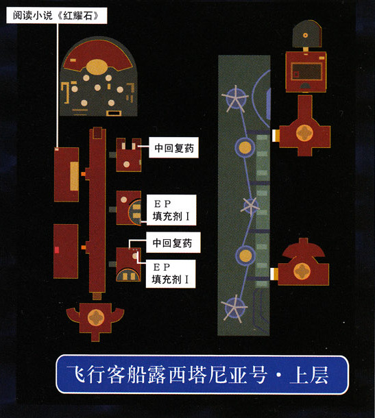

第零话 星杯骑士
飞行船·路西法尼亚号
这一次，我们的主角成为了这位绿头发的假面男，玩过SC的朋友们应该已经猜到他是谁了。离开宴会大厅，把走廊两侧的房间里面的宝箱都搜刮一遍，这些初始资源将可能为接下来的战斗提供巨大的帮助。走廊左侧第一个房间书架的角落可以读到小说《红耀石》。离开走廊之后经过甲板走到另一侧，进入之后一段剧情，开始调查房间。该房间内有五处机关，调查并按下地毯左角、盆栽、花瓶和桌子这四处即可打开隐蔽门，沙发下的机关一旦按下将会把所有已打开的机关清零，就要重新按下了。

按下机关后调查隐藏门旁边，选择输入第二组密码（这个密码其实来自SC终章），之后发生剧情，绿头发男子显露自己的真实身份——星杯骑士凯文·格拉汉姆。剧情战难度很低，凯文具有压倒性的实力，只需要不断地物理攻击就能轻易击败。战斗后沿着来时的路返回宴会厅，路上会发生多次剧情战，对手战斗力不高，凯文只需要不断地物理攻击，偶尔使用几次死亡制裁就能轻易击败对手，进入走廊后用魔法回满HP，走到尽头又是剧情战，敌方战斗力略有提升，只需要多用死亡制裁和物理攻击结合，瞄准一两个对手集中攻击就能获胜了。战斗后又是剧情，凯文离开飞行船，来到一艘国际定期船上。
定期船上跟所有NPC对话后切换场景时就会触发定期船到站的剧情，建议在此之前存一下档，接下来战斗中可能会陷入困境。漫长的剧情后，新的女主角莉丝加入队伍，进入跟基尔巴特的剧情战。基尔巴特本身的攻击力不高，但是会使用有一定几率冻结的战技，一旦两个人都被命中可能就会陷入危机，所以开场就全力攻击基尔巴特吧，此人HP不多，使用冻结战技的几率也不高。G-阿帕奇攻击力很强，不过速度很慢，击败基尔巴特之后慢慢就能磨死他。战斗后又是剧情，我们的两位主角被带入一个奇妙的空间。第零话结束。